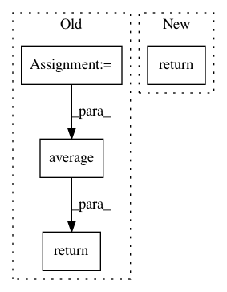

9d1ff2c8a536945885daecbd98dd2ecb387d9276,skorch/net.py,,train_loss_score,#Any#Any#Any#,32
Before Change
// pylint: disable=unused-argument
def train_loss_score(net, X=None, y=None):
losses = net.history[-1, "batches", :, "train_loss"]
batch_sizes = net.history[-1, "batches", :, "train_batch_size"]
return np.average(losses, weights=batch_sizes)
// pylint: disable=unused-argument
def valid_loss_score(net, X=None, y=None):
After Change
// pylint: disable=unused-argument
def train_loss_score(net, X=None, y=None):
return net.history[-1, "batches", -1, "train_loss"]
// pylint: disable=unused-argument
def valid_loss_score(net, X=None, y=None):
In pattern: SUPERPATTERN
Frequency: 3
Non-data size: 4
Instances
Project Name: dnouri/skorch
Commit Name: 9d1ff2c8a536945885daecbd98dd2ecb387d9276
Time: 2018-05-03
Author: marian.tietz@ottogroup.com
File Name: skorch/net.py
Class Name:
Method Name: train_loss_score
Project Name: dnouri/skorch
Commit Name: 9d1ff2c8a536945885daecbd98dd2ecb387d9276
Time: 2018-05-03
Author: marian.tietz@ottogroup.com
File Name: skorch/net.py
Class Name:
Method Name: valid_loss_score
Project Name: sepandhaghighi/pycm
Commit Name: 07f762a32e0cfc0cb335ae9e4c6de041959a57f9
Time: 2020-09-04
Author: sabouri.sadra@gmail.com
File Name: pycm/pycm_obj.py
Class Name: ConfusionMatrix
Method Name: average